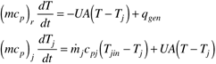
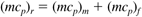
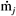
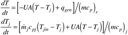
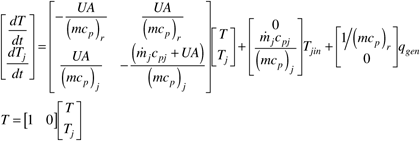
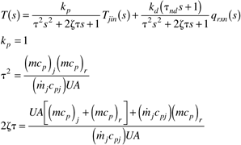
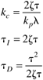
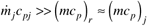
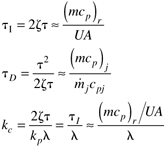
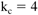

| [ Team LiB ] |
|
M11.3 Batch Model 2: Jacket Inlet Temperature ManipulatedIn this section we focus on the development of a mathematical model for the reactor and jacket; we will assume that the jacket inlet temperature is manipulated, and the jacket flowrate is constant. This model is appropriate for the strategy shown in Figure M11-3. A number of other assumptions will be made in the development of a mathematical model to describe the dynamic batch reactor behavior. First of all, we will assume that the reactor is perfectly mixed. Also, for simplicity we lump all reaction heat effects into a single heat- generation term, qgen. Similarly, the jacket is perfectly mixed; often, agitation nozzles are used to create a high "swirl velocity" in the jacket, so this assumption will be fine on the time scale of interest. Physical parameters, such as density and the heat transfer coefficient, are assumed to be constant. The dynamics of the recirculation heat-transfer system are neglected in this model. Energy balances on the reactor and jacket yield the following equations:  where the accumulation terms include the effect of any "thermal mass" of the reactor and jacket walls. For example, the reactor energy balance includes the term  where (mcp)m is the "thermal mass" (mass * heat capacity, including the metal as well as the glass lining) of the reactor wall and any other inert components (agitator, baffles, etc.). Also, (mcp)f = Vrcpf is the contribution of the reactor fluid. The term  represents the mass flow rate of the jacket fluid. Equation (M11.6) can be rewritten  The linear state space model is  The resulting input-output transfer function models relating the manipulated and disturbance inputs to the measured reactor output are (see Additional Exercise 2)  Problem M11.6 Effect of Reactor Scale on Process Parameters For each scale of reactor (Table M11-1), find the process parameters assuming that the process and jacket fluid is water and neglecting the thermal effect of the non-fluid components of the reactor and jacket. Assume that the jacket volume is 1/4 of the reactor volume. IMC-Based PID Tuning ParametersUsing the IMC-based PID tuning rules, with a desired first-order closed-loop response with a time constant of l, we find  We can also use the following order of magnitude analysis to reduce the expressions  so  Also, as in Section M11.2, let the closed-loop time constant be roughly 1/4 of the open-loop time constant, so the resulting controller proportional gain is  and the proportional band is then 25%. For a PI controller, we can start with the same parameter values, but set the derivative time constant to 0. Problem M11.7 IMC-Based PI Control: Step Setpoint Tracking Here we require that the reactor temperature setpoint be changed from 20°C to 50°C. Compare responses to step setpoint changes, for each size reactor. Discuss the practical limitations to the expected dynamic performance for each size reactor, especially considering the constraints on jacket inlet temperature (–10 to 150°C). |
| [ Team LiB ] |
|